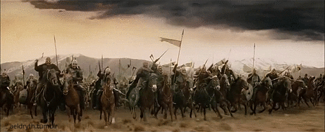

The Fellowship of the Ring
December 25, 3018 - Frodo sets out from Rivendell with the Fellowship to destroy the One Ring.
Explore the epic events of Middle-earth
December 25, 3018 - Frodo sets out from Rivendell with the Fellowship to destroy the One Ring.
October 25, 3018 - Elrond convenes a council to decide the fate of the One Ring.
February 26, 3019 - The Fellowship fractures at Amon Hen.
March 2, 3019 - Treebeard and the Ents attack Isengard.

March 2, 3019 - Saruman meets his end at Orthanc.

March 15, 3019 - The decisive battle in the War of the Ring.

March 15, 3019 - Éomer and the Rohirrim charge to aid Gondor.
March 25, 3019 - The final battle against Sauron's forces.

May 1, 3019 - Aragorn becomes King of Gondor.

November 3, 3019 - Hobbits return to find the Shire in trouble.